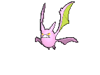

:P
Manga aanbevelingen die je echt moet lezen!!!

Yo This is SMR READS!
Yo, my name is Samir. Um, I made this website so I can show you guys my favorite manga that I've recently been reading and the ones that I think are worth reading. Uh, I also review manga in depth and I'm a very big fan of covers. So sometimes when I read a manga online fully uh, finished, I buy a volume of the manga, but I only buy the ones which have nice covers. And I like to go in depth in the cover. Sometimes you see Easter eggs. Sometimes you just see how beautifully it's made. Uh, it differs from anime. I mean, from manga to manga. Um, anime is basically manga, but animated, right? Um, so, yeah. This is all. My website is still in progress. Everything is due to subject changing, whatever it's called. Um, Be welcome to just look around. I'll be posting a lot of Easter egg buttons. So, yeah. Thank you for coming. Peace.
Follow me on da gram ---> Instagram
Manga aanbevelingen die je echt moet lezen!!!
Mijn manga collectie...
Random meningen over manga...